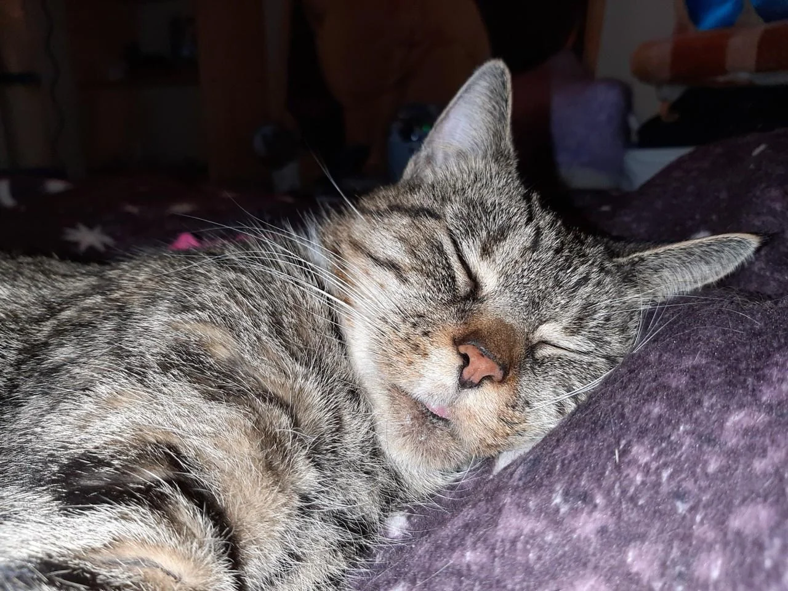
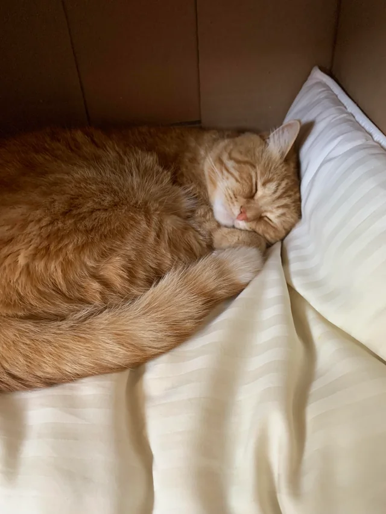
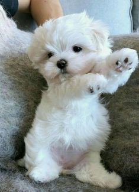
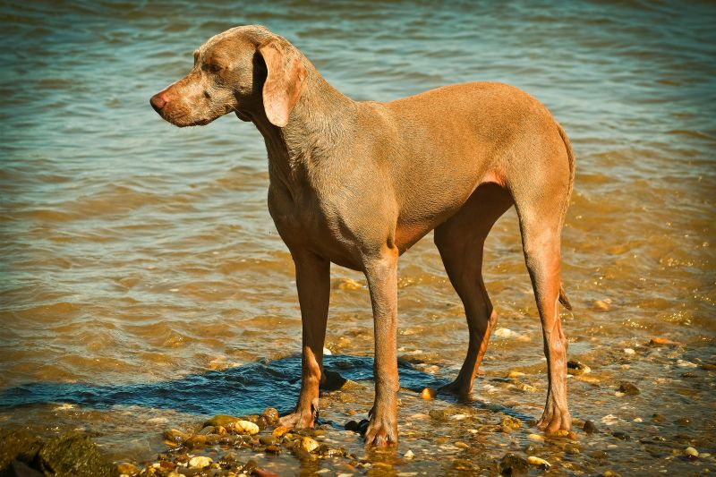

Bienvenido
Esta pagina esta pensada para amantes de las mascotas. Puedan subir imagenes de sus gatos o perros y compartir experiencias
Que ofrecera la pagina web
Subir imagenes de sus mascotas
Puedes subir fotos de tus gatos o perros y compartirlas con la comunidad.
Registrarse en la comunidad para luego registrar a sus mascotas
Registrarse en la comunidad para poder registrar a tus mascotas y compartir sus fotos.
Características del projecto
Responsive
Diseños que se adaptan a todos los dispositivos y tamaños de pantalla.
Disenio limpio
La pagina tiene un diseño limpio y fácil de usar.
Amigable
La pagina es amigable y fácil de usar para todos los usuarios.
Mis mascotas
Michi
Gato curioso de 2 años, le encanta explorar y jugar con pelotas. Es muy cariñoso con su familia y disfruta de largas siestas al sol.
Luna
Gatita elegante y tranquila de 3 años. Le fascina observar por la ventana y es experta en encontrar los mejores lugares para dormir.
Max
Perro juguetón y energético de 4 años. Le encanta salir a pasear, correr en el parque y es muy leal con su familia.
Bella
Perrita dulce y protectora de 5 años. Ama recibir caricias, jugar a buscar la pelota y es excelente guardiana del hogar.
Consejos para el cuidado de tus mascotas
Alimentación
Proporciona una dieta balanceada según la edad y raza de tu mascota.
Ejercicio
Los paseos diarios son esenciales para la salud física y mental.
Higiene
Baña a tu mascota regularmente y cepilla su pelaje.
Veterinario
Visitas regulares al veterinario previenen enfermedades.
Socialización
Permite que tu mascota interactúe con otros animales y personas.